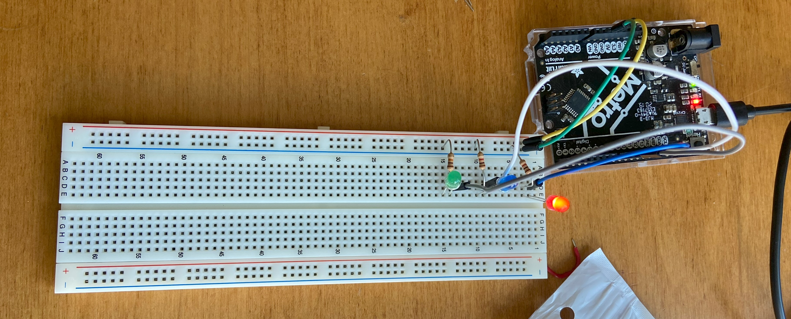
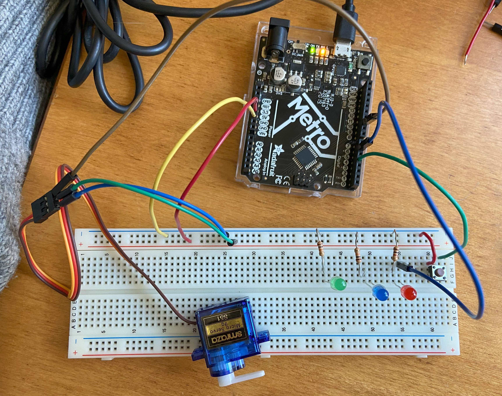

Program an Arduino to do something:
First, I followed the tutorial on Arduino Multitasking by adafruit. this taught me how to use the millis() function instead of the delay() function in Arduino/C++. I also learned how to use an OOP which makes it easy to repeat a function (e.g., turn multiple LEDs on and off). I did followed along with each step until I finally had 3 LEDs and 1 servomotor functioning at the same time (like in the tutorial). Additionally, I added a button that would stop the blinking of the green LED and the movement of the servomotor (while the blue and red LED continue blinking).
My Arduino code can be viewed/downloaded below:
Photo of the Arduino circuit with 3 LEDs:

A video of the 3 LEDs + the servomotor blinking and sweeping at the same time (like in the tutorial):
A video of the 3 LEDs + servomotor + button that stops blink of green LED and movement of servomotor:
Arduino Code for this latter circuit (with button):
#include <Servo.h>
class Flasher
{
// Class Member Variables
// These are initialized at startup
int ledPin; // the number of the LED pin
long OnTime; // milliseconds of on-time
long OffTime; // milliseconds of off-time
// These maintain the current state
int ledState; // ledState used to set the LED
unsigned long previousMillis; // will store last time LED was updated
// Constructor - creates a Flasher
// and initializes the member variables and state
public:
Flasher(int pin, long on, long off)
{
ledPin = pin;
pinMode(ledPin, OUTPUT);
OnTime = on;
OffTime = off;
ledState = LOW;
previousMillis = 0;
}
void Update()
{
// check to see if it's time to change the state of the LED
unsigned long currentMillis = millis();
if((ledState == HIGH) && (currentMillis - previousMillis >= OnTime))
{
ledState = LOW; // Turn it off
previousMillis = currentMillis; // Remember the time
digitalWrite(ledPin, ledState); // Update the actual LED
}
else if ((ledState == LOW) && (currentMillis - previousMillis >= OffTime))
{
ledState = HIGH; // turn it on
previousMillis = currentMillis; // Remember the time
digitalWrite(ledPin, ledState); // Update the actual LED
}
}
};
class Sweeper{
Servo servo; // the servo
int pos; // current servo position
int increment; //increment to move for each interval
int updateInterval; //interval between updates (in milliseconds)
unsigned long lastUpdate; //last update of position (in milliseconds)
//CONSTRUCTOR
public:
Sweeper(int interval){
updateInterval = interval;
increment = 1;
}
void Attach(int pin){
servo.attach(pin);
}
void Detach(){
servo.detach();
}
void Update(){
// check if time to update
if(millis() - lastUpdate > updateInterval){
lastUpdate = millis(); // remember time
pos += increment; // increase/change position
servo.write(pos); // change position of Servo motor
Serial.println(pos); // print the position in serial monitor
//end of sweep when degree is 180 or 0.
if((pos >= 180) || (pos $lt=0)){
// reverse direction
increment = -increment;
}
}
}
};
Flasher led1(11, 123, 400);
Flasher led2(12, 350, 350);
Flasher led3(13, 200, 222);
Sweeper sweeper(15);
void setup()
{
Serial.begin(9600);
pinMode(2, INPUT_PULLUP);
sweeper.Attach(10);
}
void loop()
{
// if button is not pressed
if (digitalRead(2) == HIGH){
sweeper.Update();
led1.Update(); //green
}
// so if the button is pressed do not update sweeper(servo Motor) and LED1.
led2.Update(); //blue
led3.Update(); //red
}
I also created an arduino circuit where I could control servomotor movement and an LED with 2 separate buttons. I
didn't actually have two buttons at the time so I just manually switched the pins between pin 4 and 5 for the button.
